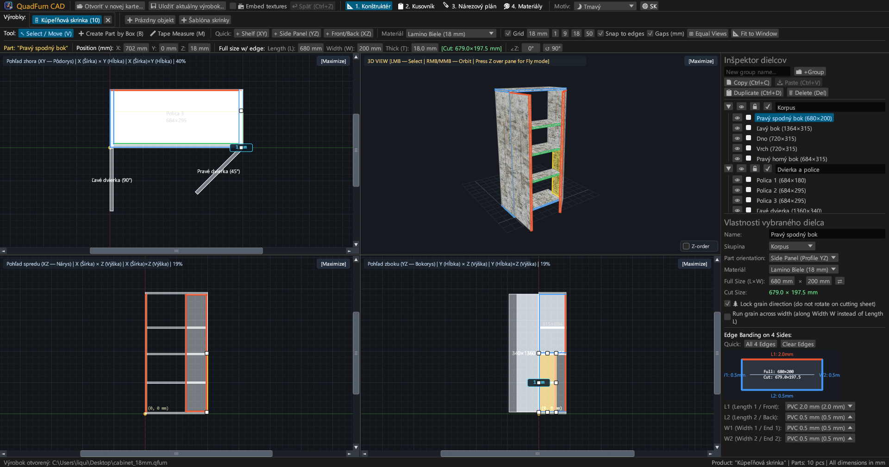
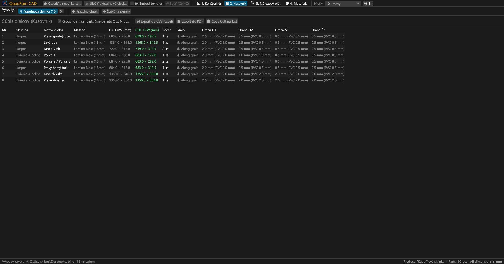
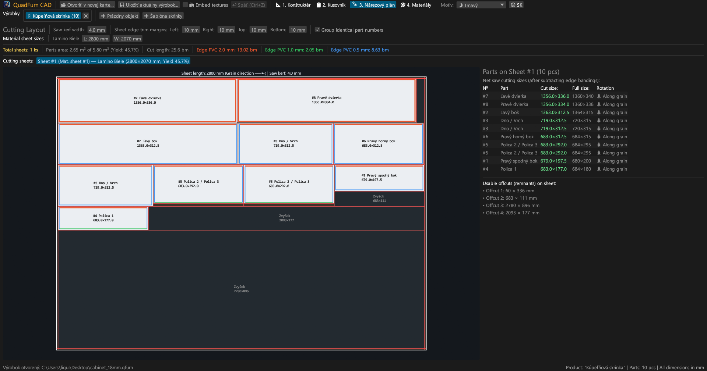
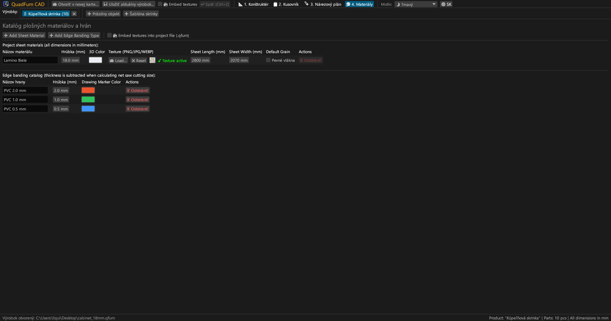
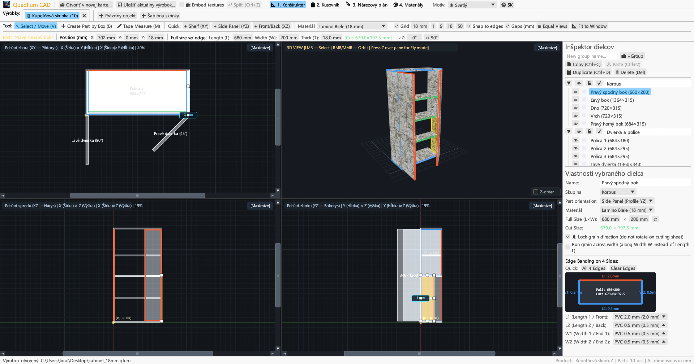
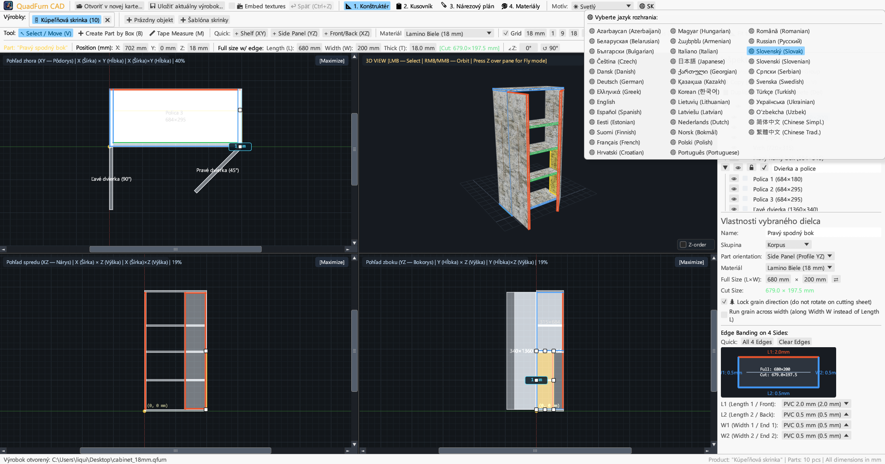

Rýchly desktopový CAD pre stolárov. 4-pohľadové synchrónne modelovanie, zadávanie rozmerov s kalkulačkou, odpočet hrán a optimalizácia rezania.

Spája 4-pohľadové kreslenie, presné číselné zadávanie a gilotínový nárezový plán v jedinej aplikácii.
Súčasná práca v pôdoryse (XY), náryse (XZ), bokoryse (YZ) a 3D s posuvníkmi, magnetickým prichytávaním a kótami medzier.
Zadávanie súradníc (X, Y, Z), rozmerov (L × W × T) a uhla s kalkulačkou priamo v poliach (napr. 600-4 alebo (800-36)/2).
Priradenie ABS/PVC hrán (0,4–2,0 mm) k 4 stranám pre výpočet presných čistých rezných rozmerov pre formátovaciu pílu.
Algoritmus rešpektujúci smer štruktúry dreva, prerez píly (4,0 mm), formátovací orez a evidenciu využiteľných zvyškov dosiek.
Práca na viacerých kusoch nábytku súčasne v záložkách. Kopírovanie a vkladanie dielcov s prenosom materiálov.
Export na šírku A4: kusovník, 4-pohľadové výkresy, nárezové plány a prehľad materiálov s rezervou +15 %.





Samostatné spustiteľné súbory bez externých závislostí.
Prenosná verzia s ikonou, bez nutnosti inštalácie.
sudo apt install ./quadfurn_0.2.5_amd64.deb
Univerzálny balík pre Apple Silicon (M1–M4) a Intel x86_64.
| Kláves | Činnosť | Oblasť |
|---|---|---|
| V | Nástroj Výber / Posun (8 úchytiek, výber obdĺžnikom) | 2D pohľady |
| B | Vytvoriť dielec rámčekom v aktívnej rovine | 2D pohľady |
| M | Meradlo (presné meranie vzdialeností v milimetroch) | 2D pohľady |
| Z | Voľný let z pohľadu prvej osoby (Noclip s WASD) | 3D okno |
| ← → ↑ ↓ | Posun o krok mriežky (Shift pre dvojitý krok) | 2D pohľady |
| Ctrl + C / V | Kopírovať / vložiť dielce (medzi záložkami) | Všetky záložky |
| Ctrl + D | Duplikovať vybrané dielce s posunom | Aktívny projekt |
| Ctrl + S | Uložiť projekt do súboru .qfurn / .json | Aktívny projekt |
| Ctrl + Z | Vrátiť späť (až 40 krokov histórie) | Aktívny projekt |
| Delete / Backspace | Zmazať vybrané dielce | Aktívny projekt |